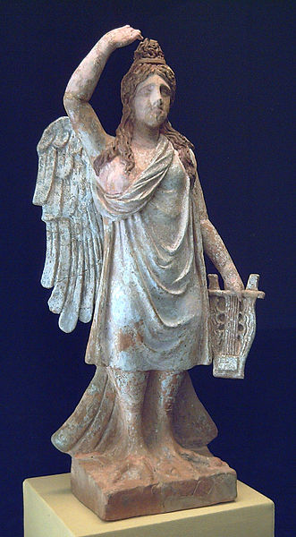

Sereia ou sirena é uma figura da mitologia, presente em lendas que serviram para personificar aspectos do mar ou os perigos que ele representa. Quase todos os povos que dependiam do mar para se alimentar ou sobreviver, tinham alguma representação feminina que enfeitiça os homens até se afogarem.O mito das criaturas híbridas, representadas na mitologia grega, como um ser que continha o corpo de um pássaro e a delicadeza de uma mulher.
É provável que o mito tenha tido origem em relatos da existência de animais com características próximas daqueles que, mais tarde, foram classificados como sirénios.
A mitologia grega foi a quem mais colaborou com o imaginário ocidental. Em 1 100 a.C., eles criaram não só as sereias como as sirenas: mulheres-pássaros que causavam naufrágios ao distrair marinheiros com a voz. Diferentemente das mulheres-peixe, nunca se apaixonavam por humanos. Eram filhas do deus-rio Aqueloo, criadas para serem amigas de Perséfone, filha de Zeus e Deméter. Filhas do rio Achelous e da musa Terpsícore, tal como as harpias, habitavam os rochedos entre a ilha de Capri e a costa da Itália.
Eram tão lindas e cantavam com tanta doçura que atraíam os tripulantes dos navios que passavam por ali para os navios colidirem com os rochedos e afundarem. Odisseu, personagem da Odisseia de Homero, conseguiu salvar-se porque colocou cera nos ouvidos dos seus marinheiros e amarrou-se ao mastro de seu navio, para poder ouvi-las sem poder aproximar-se. As sereias representam na cultura contemporânea o sexo e a sensualidade.
A palavra da língua portuguesa "sereia" (do português arcaico serẽa) e suas equivalentes em outras línguas latinas derivam do grego antigo Σειρῆν no singular (Σειρῆνες no plural), Seirến, enquanto a palavra "sirena" deriva de Σειρήνα, Seirína, nomes de um ser mitológico. No português, os equivalentes masculinos das sereias são chamados de tritões, nomes de seres da mitologia grega que não estavam relacionados às antigas sirenas da mitologia.
Na Idade Média, as sereias com caudas de peixe foram primeiramente descrito por um monge da Abadia de Malmesbury em torno de 680 d.C. Para o Cristianismo estes seres significavam pecado, vaidade e luxúria. As sereias dos bestiários e outros manuscritos medievais desempenhavam as funções básicas de mostrar a bondade e a riqueza da Criação de Deus; e personificar os pecados mortais, as tentações da carne e a vaidade como pecado corporificado na beleza, no espelho e no pente, os inseparáveis objetos característicos da imagem contemporânea das sereias. Por essa razão, são relativamente comuns na arte sacra, como decoração de igrejas e altares. Junto com os dragões, as sereias são um dos animais fantásticos mais representados no românico português.